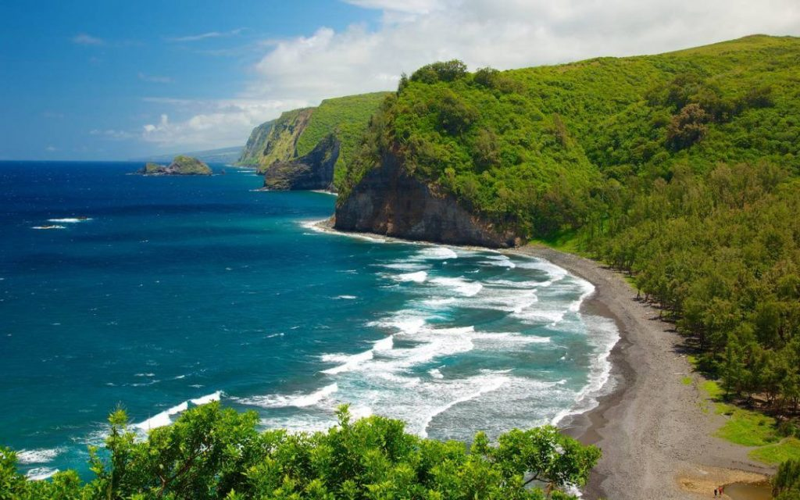
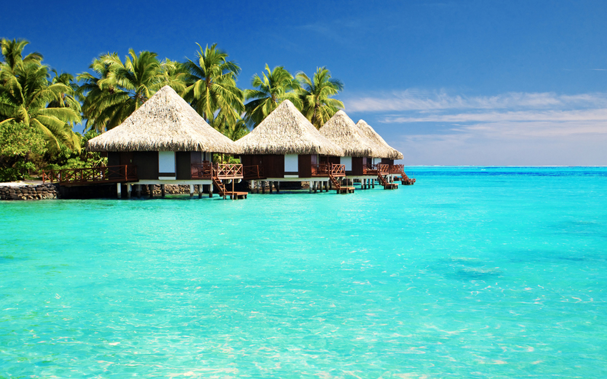

Гаваї
Пальми, м'який пісок, гарний океан, неповторні пейзажі, різноманіття екзотичних фруктів, квітів, птахів - що ще потрібно для щастя? Коли тільки починаєш замивалося про тропічному відпочинку, на думку відразу приходить чудове місце - Гаваї, адже саме ці острови неодмінно припадуть до смаку, навіть самим досвідченим мандрівникам. Виходячи з вищесказаного, Ви отримаєте справжнє задоволення від чарівної романтики, так як Гавайські острови - це ідеальне місце, адже не дарма їх традиційно називають раєм на землі.
Сейшели

Сейшели - «райські острови» або «земний рай», де природа чиста і ніжна. Сейшельські острови складаються з понад 100 островів. Вони ідеально підходять для відпочинку: маючи при цьому найнеймовірніші пейзажі незайманої природи. Кажуть, що таких пляжів, такого підводного і рослинного світу немає більше ніде на планеті. Відпочинок на Сейшелах - справжня казка, це, то місце, де народилося слово «романтика».
Карибські острови
На Карибських островах спостерігається тропічний клімат (в період з жовтня по травень триває сезон дощів). Карибські острови представляють собою багатокілометрові пляжі, чисте, прозоре море та розвинену інфраструктуру. Це все робить відпочинок на Карибах захопливим та привабливим для багатьох мандрівників. Любителі поплавати під водою часто обирають Кайманові острови та острів Кюрасао, там кращий з кращих підводний світ. Віндсерфінгом найкраще займатись на узбережжі острова Аруба, адже саме там спостерігається сильний вітер, що робить великі хвилі. Поціновувачі ботанічних садів їдуть на острів квітів – Мартініку, до речі, на цьому ж острові організовуються запальні вечірки. Якщо ж хочеться побувати одразу на всіх Карибських островах, для цього є Мандрівка по Карибському морю на лайнері. Тури на Карибські острови купують заради: карнавалів на Сент-Томасі та Сент-Джонсі, Фестивалю Карасів та сонячних зимових канікул на острові Санта-Клус.